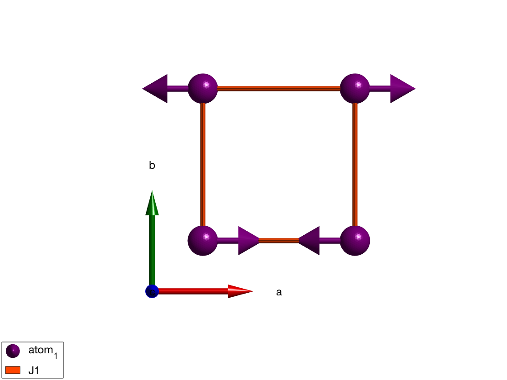
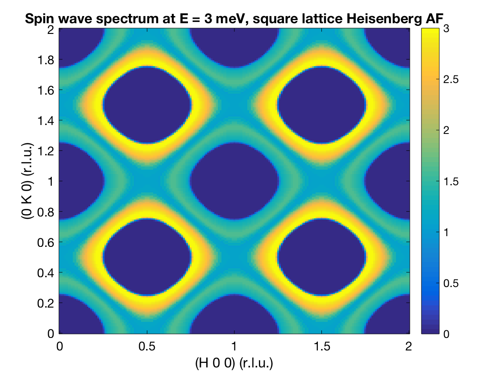

How to produce constant energy cut of spin wave spectrum?
This example shows how to calculate the spin wave spectrum of the square lattice Heisenberg antiferromagnet and to produce a constant energy cut of the spectrum.
Contents
Crystal & magnetic structure
Using sw_model, the crystal and magnetic structure are readily available. Using the 'squareAF' option, a square lattice Heisenberg Antiferromagnet with S = 1 and J = 1 is created.
sq = sw_model('squareAF',1,0);
plot(sq)
 Spin wave
We need to define a grid in reciprocal space, here we use the (Qh, Qk, 0) square lattice plane by calling ndgrid() function.
nQ = 101; nE = 200; Qhv = linspace(0,2,nQ); Qkv = linspace(0,2,nQ); Qlv = 0; [Qh, Qk, Ql] = ndgrid(Qhv,Qkv,Qlv);
Create a list of Q point, with dimensions of [3 nQ^2].
Q = [Qh(:) Qk(:) Ql(:)]';
Spin wave spectrum
% We calculates the spin wave spectrum at the list of Q points.
spec = sq.spinwave(Q);
Creates a grid along energy for color plot. The trace of the spin-spin correlation function (diagonal sum) will be plotted.
Ev = linspace(0,5,nE); spec = sw_egrid(spec,'component','Sxx+Syy+Szz','Evect',Ev);
Introduce a finite energy resolution in the spectru.
spec = sw_instrument(spec,'dE',0.3,'ki',1e4);
The calculated intensity map is stored in spec.swConv, we reshape it into a 3D matrix.
spec3D = reshape(spec.swConv,nE,nQ,nQ);
Plotting E=const cut
A constant energy cut takes the (Eidx,:,:) elements of the matrix and plots it using the Matlab function imagesc().
Ecut = 3; %meV Eidx = find(abs(Ev-Ecut)==min(abs(Ev-Ecut))); figure; imagesc(Qhv,Qkv,squeeze(spec3D(Eidx,:,:))); set(gca,'YDir','normal') xlabel('(H 0 0) (r.l.u.)') ylabel('(0 K 0) (r.l.u.)') title('Spin wave spectrum at E = 3 meV, square lattice Heisenberg AF') caxis([0 12000]) colormap jet
Written by Sandor Toth 06-June-2014